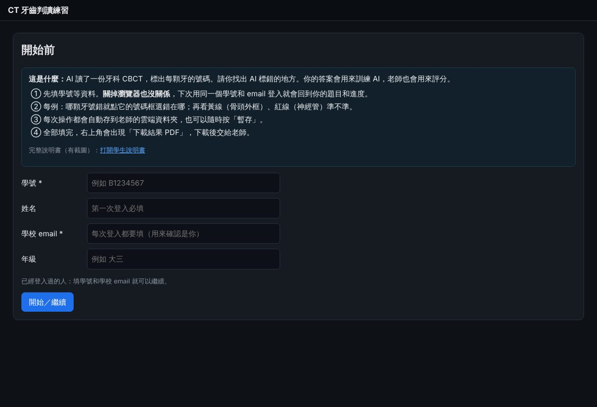
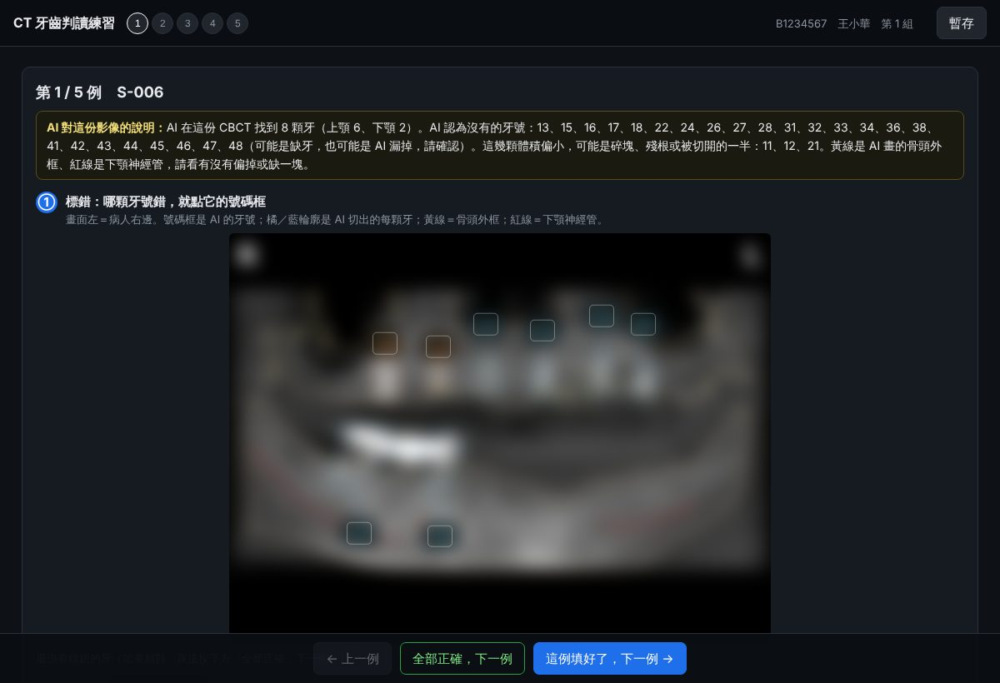
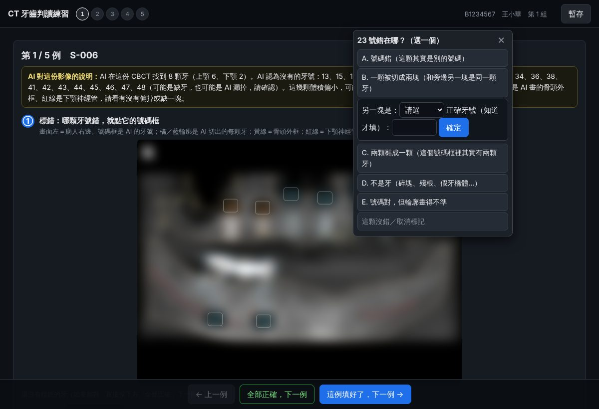
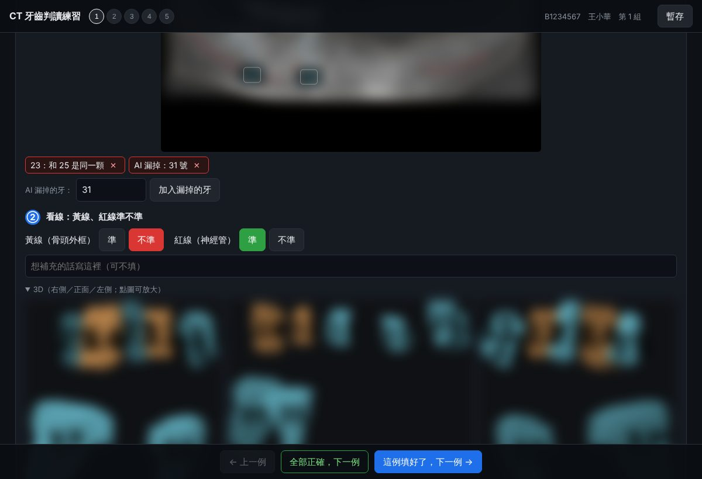
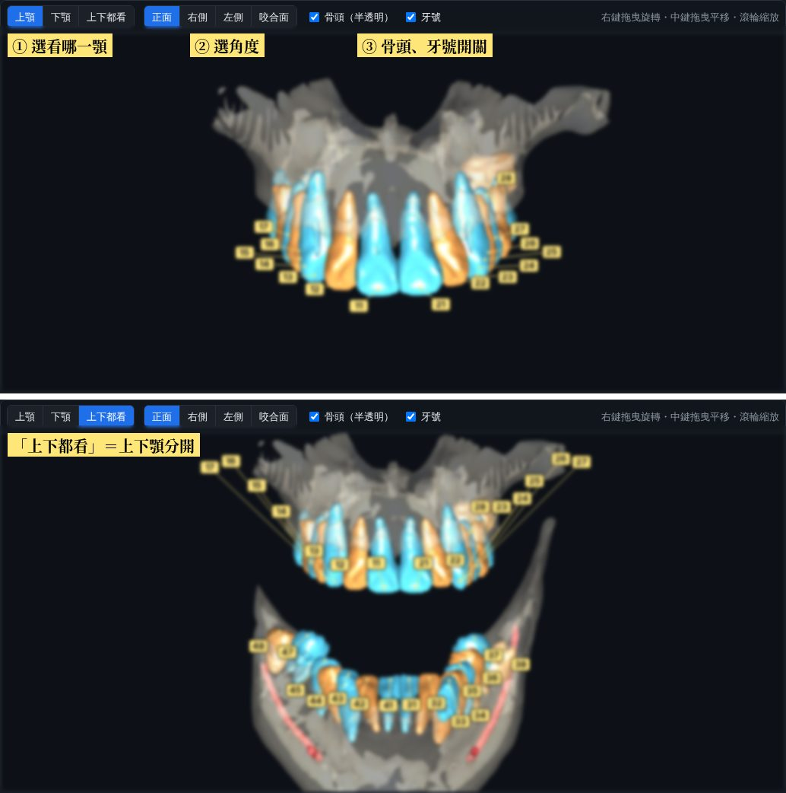
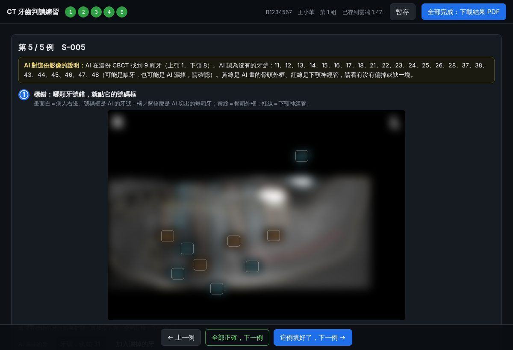

CT 牙齒判讀練習｜學生說明書
教學／研究用｜每人 5 例，約 30–45 分鐘｜說明書裡的影像已模糊處理
你要做什麼：AI 讀了牙科 CBCT（錐狀束電腦斷層），幫每顆牙標了號碼（FDI 牙位 11–48），也畫了骨頭外框和下顎神經管。請找出 AI 錯的地方，沒錯的不用動。你的答案會用來改進 AI，老師也會用來評分。
1. 登入

| 第一次 | 填學號、姓名、學校 email、年級，按「開始／繼續」。系統會分給你一組 5 例（先到先分，每人不同）。 |
|---|---|
| 之後 | 填學號和學校 email 就會回到同一組、同一個進度。關掉瀏覽器、換電腦都可以。 |
| 不用 Google 帳號 | 不需要登入 Google，手機、平板、電腦都能用（建議用電腦，畫面比較大）。 |
2. 畫面怎麼看

| 黃框「AI 說明」 | AI 對這份影像的簡短說明：找到幾顆牙、哪些牙號沒有、哪裡最可能錯。先讀它。 |
|---|---|
| 環景圖 | 把整排牙攤平的圖。畫面左邊＝病人右邊（左上角有 R）。 |
| 號碼框 | AI 給的牙號；橘色、藍色輪廓是 AI 切出的每一顆牙（顏色只是讓相鄰的牙分得開）。 |
| 黃線／紅線 | 黃線＝AI 畫的骨頭外框；紅線＝下顎神經管。 |
| 3D | 頁面下方的右側、正面、左側立體圖（預設打開）。點圖可以放大，環景圖看不清楚時拿來對照。 |
3. 標錯：點號碼框，選錯在哪

| A 號碼錯 | 這顆牙其實是別的號碼 → 填正確牙號。 |
|---|---|
| B 切成兩塊 | 同一顆牙被 AI 分成兩個號碼（常見：牙冠和牙根被分開）→ 選另一塊是哪個號碼。 |
| C 黏成一顆 | 一個號碼框裡其實有兩顆牙 → 知道的話填兩個正確牙號。 |
| D 不是牙 | 碎塊、殘根、假牙橋體、植體上的牙冠被當成牙。 |
| E 輪廓不準 | 號碼對，但 AI 畫的牙齒範圍明顯多一塊或少一塊。 |
| AI 漏掉的牙 | 看得到牙、但 AI 沒給號碼 → 在「AI 漏掉的牙」填牙號，按「加入」。 |
標錯了？點清單上的 ✕，或再點一次號碼框選「這顆沒錯／取消標記」。
4. 看線、補充、下一例

黃線、紅線各按一次「準」或「不準」（偏掉、缺一塊、跑到牙齒上都算不準）。想說的話寫在補充欄。
| 這例填好了，下一例 | 有標錯時按這個。 |
|---|---|
| 全部正確，下一例 | 整例 AI 都沒錯、線也準時按這個。 |
| 上方圓點 | 綠色＝已完成；可以點回去改。 |
4-1. 3D：轉一轉，對照牙號

滑鼠：右鍵拖曳＝旋轉（可以任意方向轉，放開就停）；中鍵（滾輪按下去）拖曳＝平移；滾輪＝放大縮小。筆電觸控板：左鍵拖曳也能旋轉，Shift＋左鍵拖曳＝平移。手機：單指旋轉、雙指縮放。
- 預設只看上顎，一次看一顎比較不會擋到；按「上下都看」會把上下顎分開。
- 按「右側／左側」只畫靠近你那一側的牙，左右不會疊在一起。
- 骨頭是半透明的，勾掉「骨頭」就只剩牙齒和紅色神經管。牙號有引線指到牙冠，可以勾掉「牙號」。
- 3D 只是幫你看清楚；標錯還是在上面的全景圖點號碼框。
5. 存檔與交件

自動存檔：每次操作約 3 秒內存到老師的雲端；右上角顯示「已存到雲端 時:分」。
暫存：想確定有存，隨時按「暫存」。
交件：5 例都完成，右上角才會出現「全部完成：下載結果 PDF」。下載後交給老師。PDF 每頁是圖片（不能改），上面有驗證碼；成績以老師雲端紀錄為準。下載 PDF 就算交件，之後不能再改；要改請找老師退回。
暫存：想確定有存，隨時按「暫存」。
交件：5 例都完成，右上角才會出現「全部完成：下載結果 PDF」。下載後交給老師。PDF 每頁是圖片（不能改），上面有驗證碼；成績以老師雲端紀錄為準。下載 PDF 就算交件，之後不能再改；要改請找老師退回。
6. 常見問題
| 看不懂某顆牙 | 不確定就不要標，只標有把握的錯。 |
|---|---|
| 「雲端存檔失敗」 | 答案已先存在這台電腦，網路恢復後按「暫存」。 |
| 「學號和 email 對不上」 | 要用第一次登入時的同一組學號和 email。 |
| 題組已分完 | 請聯絡老師。 |
| 學號打錯 | 請聯絡老師，不要用另一個學號重填。 |
影像只用病例代碼（S-xxx），不含任何病人資料。請勿截圖外傳。